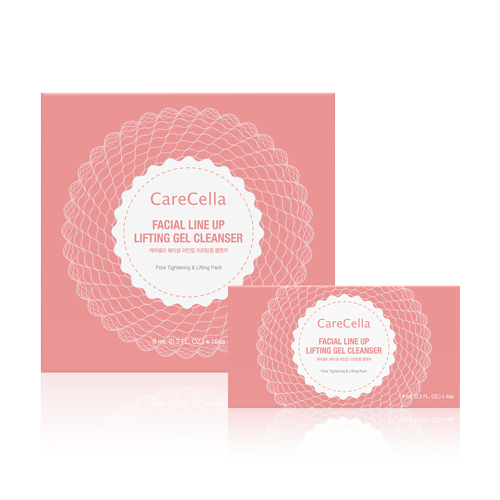

케어셀라 훼이셜 라인업 리프팅 겔 클렌저
강력한 주름 개선과 안면 리프팅 팩
- 회원가입 없이 회원가
- 지쿱 본사 정품 직접 발송
- 5만 원 이상 무료배송
케어셀라 훼이셜 라인업 리프팅 겔 클렌저 상세 설명 · 원료와 특징
케어셀라 훼이셜 라인업 리프팅겔 클렌저 강력한 주름 개선 몬스터 이펙트 강력한 주름 개선 몬스터 이펙트 몬스터처럼 강력한 힘에 의한 효과를 느낄 수 있는 몬스터 이펙트로 눈에 보이지 않는 주름까지 개선해 줍니다.
주름골 피부 자극 테스트 에 대한 임상을 완료한 제품 한국피부임상과학연구소에서 안면 리프팅, 목 주름, 팔자 주름, 이마 주름, 입가 주름(입꼬리주름), 눈가 주름, 피부톤, 모공 타이트닝, 턱 탄력 개선 임상 완료 안면 리프팅 개선 평가 턱 탄력 모공 타이트닝 피부 톤 눈가 주름 입가 주름 (입꼬리 주름) 이마 주름 팔자 주름 목 주름 촬영 영상 사용 전 사용 중 사용 후 이마 확대 눈꼬리 확대
임상결과 임상 기관 : 한국피부임상과학연구소 임상 항목 : 안면 리프팅, 목 주름, 팔자주름, 입가주름 (입꼬리 주름), 이마주름, 눈가주름, 피부 톤, 턱 탄력, 모공 타이트닝 개선 안면 리프팅 개선 평가 사용 직후 2주 사용 후 그림 8. z value 변화 그림 9. z value 개선율(%).
피부 높이를 나타내는 z value가 시험 물질 사용 전과 비교하여 사용 직후 1.20%, 2주 사용 후 2.43%가 증가되는 변화를 나타내었다. 또한 시험 물질 사용 전과 비교하여 2주 사용 후 통계적으로 유의하게 나타나(p<.05) 시험 물질이 안면 리프팅 개선에 도움을 주는 것으로 판단된다.
※ 임상 결과 발췌 제품 사용으로 피부 높이가 높아지는 것을 확인하였고, 안면 리프팅에 도움이 된다는 것을 확인 하였습니다.
목 주름 개선 평가 그림 10. Wrinkles medium값 변화 그림 11. Wrinkles medium값 개선율(%) Wrinkles medium값이 시험 물질 사용 전과 비교하여 사용 직후 1.49%, 2주 사용 후 2.49%가 감소되는 변화를 나타내었다. 또한 시험 물질 사용 전과 비교하여 사용 직후, 2주 사용 후 통계적으로 유의하게 나타나(p<.05) 시험 물질이 목주름 개선에 도움을 주는 것으로 판단된다.
ANTERA 3D적용 제품 사용으로 목 주름 개선이 되는 것을 확인하였고, 목 주름 개선에 도움이 된다는 것을 확인 하였습니다.
팔자 주름 개선 평가 그림 12. Rt값 변화 그림 13. Rt값 개선율(%) 피부 주름을 나타내는 Rt값이 시험 물질 사용 전과 비교하여 사용 직후 11.44%, 2주 사용 후 16.63%가 감소되는 변화를 나타내었다. 또한 시험물질 사용 전과 비교하여 사용 직후, 2주 사용 후 통계적으로 유의하게 나타나(p<.01) 시험 물질이 팔자 주름 개선에 도움을 주는 것으로 판단된다.
제품 사용으로 팔자 주름 개선이 되는 것을 확인하였고, 팔자 주름 개선에 도움이 된다는 것을 확인 하였습니다.
이마 주름 개선 평가 그림 16. Wrinkles medium값 변화 그림 17. Wrinkles medium값 개선율(%) Wrinkles medium 값이 시험 물질 사용 전과 비교하여 사용 직후 3.42%, 2주 사용 후 3.65%가 감소되는 변화를 나타내었다. 또한 시험 물질 사용 전과 비교하여 사용 직후, 2주 사용 후 통계적으로 유의하게 나타나 (p<.001) 시험 물질이 이마 주름 개선에 도움을 주는 것으로 판단된다.
제품 사용으로 이마 주름 개선이 되는 것을 확인하였고, 이마 주름 개선에 도움이 된다는 것을 확인 하였습니다.
입가주름(입꼬리주름) 주름 개선 평가 그림 14. Wrinkles medium값 변화 그림 15. Wrinkles medium값 개선율(%) Wrinkles medium값이 시험 물질 사용 전과 비교하여 사용 직후 2.13%, 2주 사용 후 7.11%가 감소되는 변화를 나타내었다. 또한 시험 물질 사용 전과 비교하여 사용 직후, 2주 사용 후 통계적으로 유의하게 나타나(p<.05) 시험 물질이 입가주름 (입꼬리주름) 개선에 도움을 주는 것으로 판단된다.
제품 사용으로 입가주름(입꼬리주름) 개선이 되는 것을 확인하였고, 입가주름(입꼬리주름) 개선에 도움이 된다는 것을 확인 하였습니다.
눈가 주름 개선 평가 그림 18. 눈꼬리주름 면적 변화 그림 19. 눈꼬리주름 면적 개선율(%) 눈꼬리주름 면적이 시험 물질 사용 전과 비교하여 사용 직후 3.67%, 2주 사용 후 16.64%가 감소되는 변화를 나타내었다. 또한 시험 물질 사용 전과 비교하여 2주 사용 후 통계적으로 유의하게 나타나(p<.05) 시험 물질이 눈가주름개선에 도움을 주는 것으로 판단된다.
제품 사용으로 눈가주름개선이 되는 것을 확인하였고, 눈가주름 개선에 도움이 된다는 것을 확인 하였습니다.
피부 톤 개선 평가 그림 22. L* value 변화 그림 23. L* value 개선율(%) 피부 밝기를 나타내는 L*값이 시험 물질 사용 전과 비교하여 사용 직후 0.01%, 2주 사용 후 0.74% 가 증가되는 변화를 나타내었다. 또한 시험 물질 사용 전과 비교하여 2주 사용 후 통계적으로 유의하게 나타나(p<.05) 시험 물질이 피부톤개선에 도움을 주는 것으로 판단된다.
제품 사용으로 피부 톤 개선이 되는 것을 확인하였고, 피부 톤 개선에 도움이 된다는 것을 확인 하였습니다.
모공 타이트닝 개선 평가 그림 26. 눈에 띄는 모공 수 변화 그림 27. 눈에 띄는 모공 수 개션율(%) 전안촬영시스템을 이용하여 안면 부위의 모공 타이트닝 개선도를 분석한 결과, 눈에 띄는 모공 수 가 시험 물질 사용 전과 비교하여 사용 직후 5.49%, 2주 사용 후 9.37%가 감소되는 변화를 나타내었다. 또한 시험 물질 사용 전과 비교하여 2주 사용 후 통계적으로 유의하게 나타나(p<.05) 시험 물질이 모공 타이트닝 개선에 도움을 주는 것으로 판단된다.
제품 사용으로 모공 타이트닝 개선이 되는 것을 확인하였고, 모공 타이트닝 개선에 도움이 된다는 것을 확인 하였습니다.
턱 탄력 개선 평가 그림 24. 피부탄력 변화 그림 25. 피부탄력 개션율(%) 턱 중앙부위의 턱 탄력 개선도를 분석한 결과, 피부 탄력이 시험물질 사용 전과 비교하여 2주 사용 후 17.89%가 증가되는 변화를 나타내었다. 또한 시험물질 사용 전과 비교하여 2주 사용 후 통계적으로 유의하게 나타나(p<.05) 시험물질이 턱 탄력개선에 도움을 주는 것으로 판단된다.
피부 이상 반응 표33. 피시험자가 보고한 피부이상반응 이상반응 2주 사용후 1. 홍반(붉어짐) 5. 자통(통증) 2. 부종(부어오름) 6. 작열감 3. 인설(각질) 7. 뻣뻣함 4. 가려움 8. 따끔거림 0:없음. 1:약함. 2:중증도. 3:심함 1) 시험담당자에 의한 피부이상반응 평가 피시험자들에게 시험 물질을 사용한 후 알레르기성 접촉 피부염(allergic contact dermatitis) 이나 자극성 접촉 피부염(irritant contact dermatitis)에 대한 이상반응은 관찰되지 않았다.
2) 피시험자 설문조사에 의한 피부이상반응 보고 시험담당자에 의한 이상반응 평가와는 별도로, 피시험자들을 대상으로 설문조사를 한 결과 피 시험자가 보고한 피부이상반응은 다음과 같다(표 33). 피시험자를 대상으로 한 설문조사에서 특별한 피부이상반응은 관찰되지 않았다.
제품 주요 성분 풀러린 피부를 매끄럽고 탄력 있게 젊고 건강하게 유지하는데 도움을 줍니다.
돌콩피토플라센타 돌콩피토플라센타는 식물이 성장할 때 열매에 양분을 공급해 주는 수많은 필수 영양소를 가진 부분입니다. '발아대두'로부터 저온 추출과 분리 정제 기법을 통해 추출 합니다. 피부 장벽 강화에 도움을 줍니다.
드래곤블러드수지추출물 주로 아마존 윗 지역인 페루, 에콰도르에 서식하는 나무로 피부 손상 예방, 피부 진정, 피부 장벽 강화에 도움을 주는 성분 입니다.
히비스커스꽃추출물 Pyruvic acid가 함유되어 우수한 각질 제거 효과를 보입니다. 피부 톤을 맑게 가꿔주며 피부를 젊고 부드럽게 보이게 합니다.
*상기 설명은 원료적 특성에 한함 독일 피부과학연구소 더마테스트(dermatest) 엑셀런트 획득 세계 최고 독일 피부과학연구소 더마테스트(dermatest)에 24시간, 48시간, 72시간 인체 피부적용 실험을 의뢰 “피부자극없음”인 Excellent를 획득 하였습니다.
브랜드 스토리 케어셀라는 ‘낫게하다’를 의미하는 Care와 라틴어로 세포를 의미하는 Cella의 합성어로 피부 본연의 아름다움을 찾아주는 시작점을 뜻합니다.
자연에서 찾은 식물성 원료를 사용하여 각 피부에 맞는 제품을 개발하고 전문적인 케어 가이드를 제안하는 홈 뷰티 화장품 브랜드입니다.
사용 방법 리프팅 겔 파우치 1팩을 개봉하여 손이나 팩 브러쉬 등을 이용하여 적당량을 취해 적용 부위에 골고루 펴 발라주세요.
약 20~30분 뒤 리프팅 겔이 완전히 경화되면 바로 미온수로 깨끗이 씻어 내십시오. 겔이 건조되는 시간에는 개인적인 차이가 있습니다. 겔이 굳으면 바로 씻어내시기 바랍니다.
세안 후 스킨 케어로 마무리해 줍니다.
* 겔이 굳은 후 시간이 오래 경과되면 피부가 일시적으로 붉어질 수 있습니다.
이런 피부에 추천합니다.
피부 주름 개선 이 필요하신 분 국소부위 미세 주름 에 대한 고민이 있으신 분 피부과, 에스테틱 관리가 아닌 홈케어를 하시고 싶은 분 저자극 기능성 관리 를 원하시는 분 각종 인증 사항 비코프인증 획득!
비코프인증(B-Corp Certified) 이란?
B-Corp은 비즈니스를 통해 사회 환경적 문제를 해결하고 사회에 긍정적인 영향을 끼치는 기업을 확대하기 위해서 2007년 BLab (미국비영리 조직)이 만든 글로벌 사회적 기업 인증 제도입니다.
가족친화우수기업 인증 획득!
가족친화인증 가족친화제도를 모범적으로 운영하는 기업 및 공공기관에 대하여 심사를 통해 인증을 부여하는 제도입니다. 가족친화인증 기업은 근로자가 일에 집중하도록 하여 기업 생산성과 경쟁력 강화하고 출산율 제고, 고용 안정 등으로 국가경제 발전에 기여할 뿐 아니라 가족친화경영 확산을 통한 근로자와 가족 구성원의 삶의 질을 향상시키는 바른 기업 문화를 확산 시킵니다.
국제 화장품 규격(Cosmetics GMP)ISO 22716 인증 획득!
Cosmetics GMP(Good Manufacturing Practices) 화장품 우수제조관리기준입니다. 화장품 기업의 제조 시설관리 기준(GMP) 뿐만 아니라, 제품 안전성 관리 시스템(업무체계)의 실행 및 유지가 매우 중요한 평가 요소입니다. 품질 및 안전이 보증된 화장품을 제조하기 위한 제품, 시설 및 공정 기준을 제시합니다. 총 17개의 요구 사항으로 이루어져 있으며, 이 요구 사항들은 인적자원, 건물, 장비 등의 인프라 관리를 기반으로 원재료에서 완제품까지의 제조 관리 기준을 통과해야만 받을 수 있는 인증입니다.
CGMP(우수화장품 제조기준) 인증 획득!
CGMP 인증 CGMP규정의 목표는 소비자에게 신뢰받는 안전하고 우수한 품질의 제품을 제조하기 위하여 작업장의 구조, 설비를 비롯하여 원료의 구입으로부터 생산, 포장, 출하에 이르기까지의 전 공정에 걸쳐 생산과 품질의 관리에 대한 체계적인 기준으로 평가해 모든 단계를 표준화된 기준에 따라 체계적으로 관리해 제품의 품질보증을 달성하는 기업에게 주는 인증입니다.
지쿱 본사 제품 상세페이지 내용을 옮겨 정리했어요.
상품정보제공고시
| 품명 | 케어셀라 훼이셜 라인업 리프팅겔 클렌저 |
|---|---|
| 용량 | (9mL X 4ea) X 4ea |
| 사용기간 | 제조일로부터 36개월 |
| 사용방법 | 1. 리프팅 겔 파우치 1팩을 개봉하여 손이나 팩 브러쉬 등을 이용하여, 적당량을 취해 적용 부위(얼굴, 목)에 골고루 펴 발라주세요. 2. 약 20~30분 뒤 리프팅 겔이 완전히 경화되면 바로 미온수로 깨끗이 씻어 내십시오. 겔이 건조되는 시간에는 개인적인 차이가 있습니다. 겔이 굳으면 바로 씻어내시기 바랍니다. 3. 세안 후 스킨케어로 마무리해 줍니다. * 상처부위나 예민한 부위는 제외하고 바릅니다. * 겔이 굳은 후 시간이 오래 경과되면 피부가 일시적으로 붉어질 수 있습니다. |
| 화장품 제조업자 및 화장품 책임 판매 업자 | 제너럴바이오(주) |
| 제조국 | 대한민국 |
| 전성분 | 정제수, 아크릴레이트/C10-30알킬아크릴레이트크로스폴리머, 실리카, 알진, 1,2-헥산다이올, 클로페네신, 알란토인, 돌콩피토플라센타추출물, 부틸렌글라이콜, 드래곤스블러드수지추출물, 글리세린, 서양산딸기추출물, 양까막까치밥나무열매추출물, 로우스위트블루베리추출물, 비치스트로베리추출물, 라즈베리추출물, 크랜베리추출물, 아사이팜열매추출물, 폴리글리세릴-10라우레이트, 히비스커스꽃추출물, 카프릴릴글라이콜, 피브이피, 카퍼트라이펩타이드-1, 풀러린 |
| pH | 10.0 ± 1.0 |
| 기능성 | 해당사항없음 |
| 주의사항 | 1. 화장품 사용 시 또는 사용 후 직사광선에 의하여, 사용부위가 붉은 반점, 부어오름 또는 가려움증 등의 이상 증상이나 부작용이 있는 경우 전문의 등과 상담할 것 2. 상처가 있는 부위 등에는 사용을 자제할 것 3. 보관 및 취급시의 주의사항 가. 어린이의 손이 닿지 않는 곳에 보관할 것 나. 직사광선을 피해서 보관할 것 4. 사용하고 남은 내용물을 보관 시 변질 될 우려가 있으니 파우치 개봉 후 한번에 모두 사용 하십시오. 5. 내용물을 복용하지 마십시오. 6. 눈 주위를 피하여 사용 하십시오. 7. 사용 후 씻어낼 때 눈을 감고 눈에 들어가지 않도록 주의하십시오. 8. 눈에 들어갔을 때에는 즉시 씻어내십시오. 9. 리프팅 작용에 의한 모세혈관 활성화로 피부가 붉어질 수 있으나 약 1시간 후 자연스럽게 사라집니다. |
| 품질보증기준 | 본 상품의 품질보증 및 피해보상에 관한 사항은 관련 법률 및 공정거래위원회 고시 [소비자분쟁해결기준]에 따릅니다. |
| 소비자 상담 문의 | 카카오톡으로 문의 주시면 지쿱 본사로 접수해 드립니다. |
케어셀라 뷰티 다른 제품
배송·교환·반품
지쿱 본사에서 직접 발송해요. 50,000원 이상 주문 시 무료배송, 50,000원 미만은 배송비 2,500원이에요. A/S·교환·반품은 카카오톡으로 문의 주시면 지쿱 본사로 접수해 드려요.